AI-Assisted Multiplayer Game Development
Clue Cutter
A multiplayer puppet-theater word game for 2–6 players. Players create five clues, watch a rival cut some away, then try to guess the hidden word using whatever survives.
Project Overview
Make the clue. Cut the clue. Guess the word.
I designed Clue Cutter as a multiplayer browser game built around giving clues, removing information, and trying to solve a word using whatever survives.
During each round, the Clue Giver creates five clues for a hidden word. The Wiper rolls a die to determine how many clues are removed, and the Guesser must identify the answer using the remaining clues.
2–6 Players
Players can join a room without creating an account.
Phone + Desktop
The interface was designed to work across touch devices and desktop browsers.
Shared TV View
A dedicated shared-screen presentation lets the room follow each round together.
Core Gameplay
Cutting the Clues
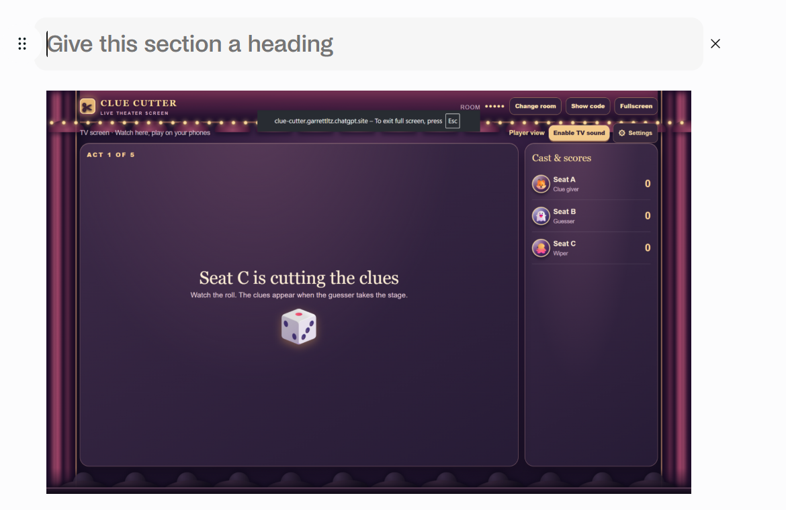
Before the guessing phase, the Wiper rolls a die to determine how many clues are removed. The Guesser then has to work with whatever information survives.
Player Input
Typed & Handwritten Clues
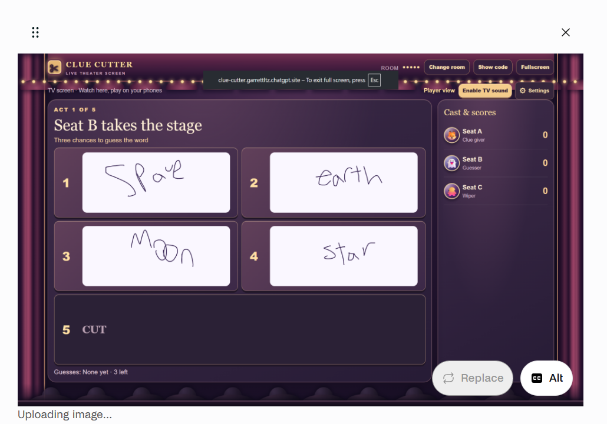
Players can type clues or draw them with a mouse or finger. Supporting handwriting made touch input an important part of the project and gave players another way to communicate clues.
Results
Round Results & Audience Reactions
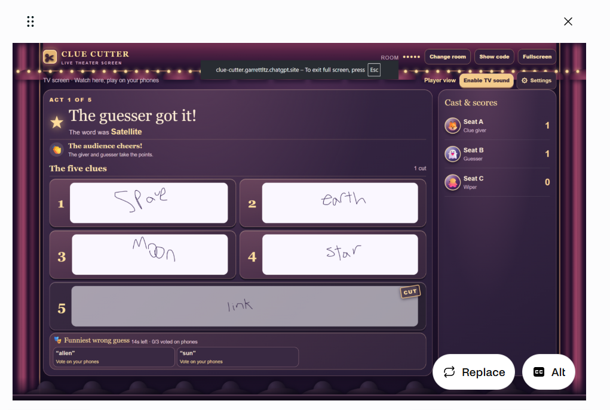
The results screen reveals the answer, updates the score, and shows how the clues affected the outcome of the round.
Audience reactions and funny-answer voting help keep players involved after the guess has been made.
Guessing
Every Cut Changes the Puzzle
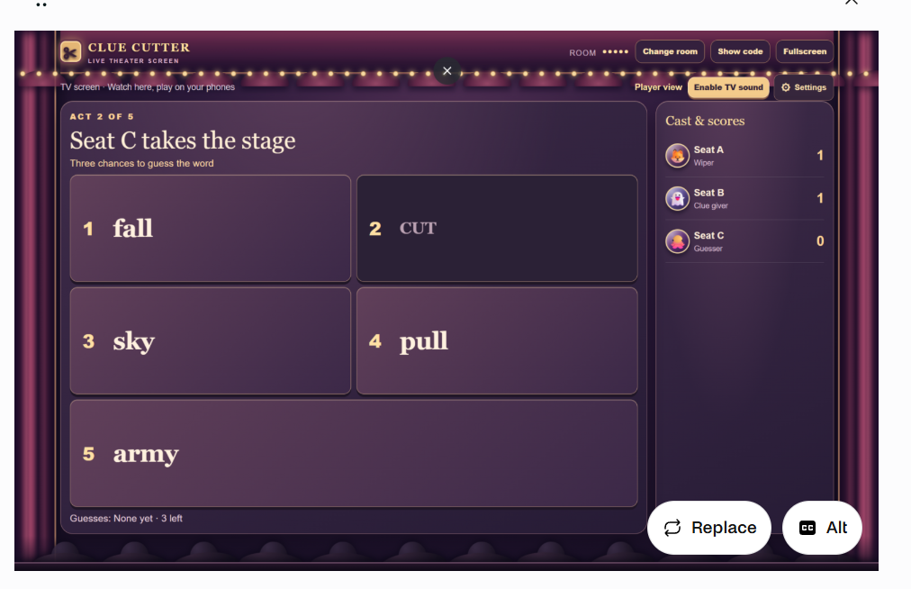
Once the clues have been cut, the Guesser takes the stage. The surviving clues become the information available for solving the hidden word.
Special Mechanic
Spotlight Wager
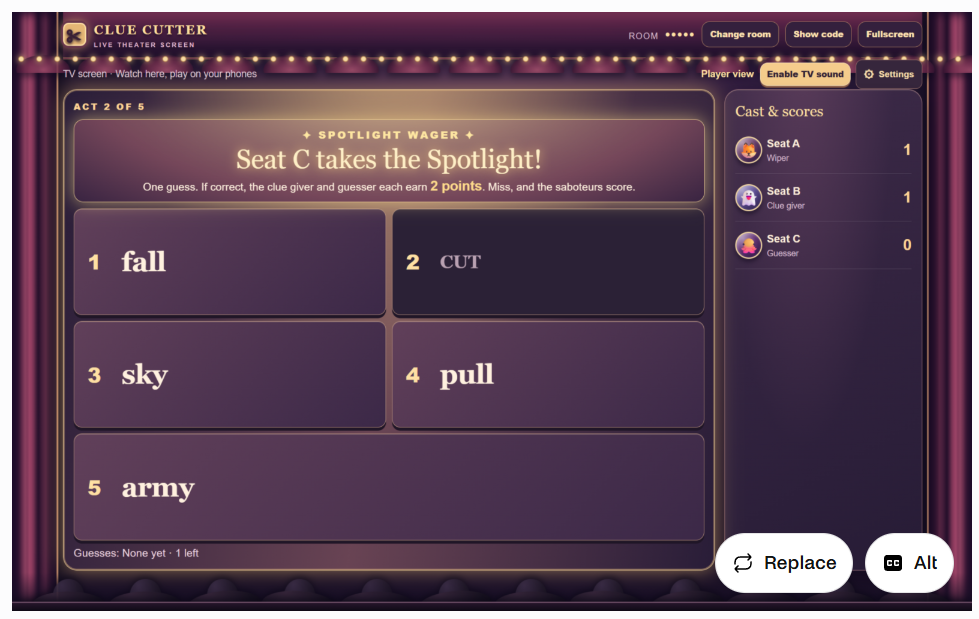
The Spotlight Wager creates a higher-stakes moment during the game. Special presentation and audio help distinguish it from a normal guessing phase.
Development Process
From Prototype to Finished Presentation
Clue Cutter went through repeated rounds of testing and revision. I saved screenshots throughout development so I could document how the game changed rather than showing only the final result.
I used AI assistance during implementation and iteration while directing the game concept, mechanics, visual style, features, testing, and revisions.
Stage 01 · September 25, 2026
Early Gameplay
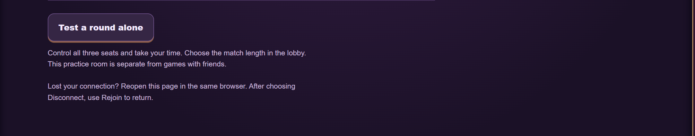
Early development focused on establishing the game loop and giving me a way to test it without needing several people connected at once.
Solo practice let me control multiple seats and repeatedly test the different roles and stages of a round.
Early Prototype
Writing Controls
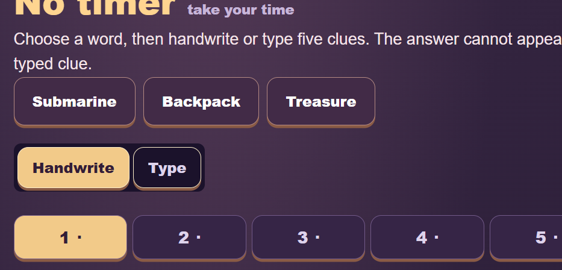
The early interface established the controls players would use for creating clues. I later refined these screens as the visual identity and phone experience became more developed.
Early Prototype
Early Round Results
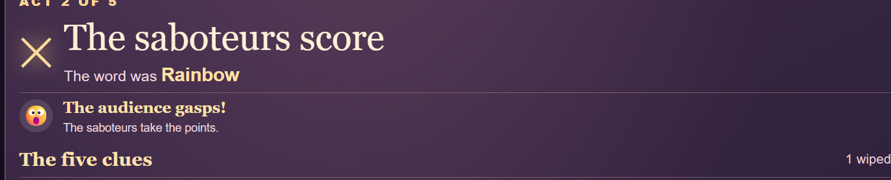
Early result screens helped me test scoring, clue reveals, and how much information players needed after each round.
Stage 02 · September 28, 2026
Theater Gameplay

Once the core gameplay was working, I developed the puppet-theater identity. Curtains, stage elements, audience silhouettes, and a cast-and-scores area gave the game a stronger visual identity.
Stage 03 · September 28, 2026
Challenge Submission
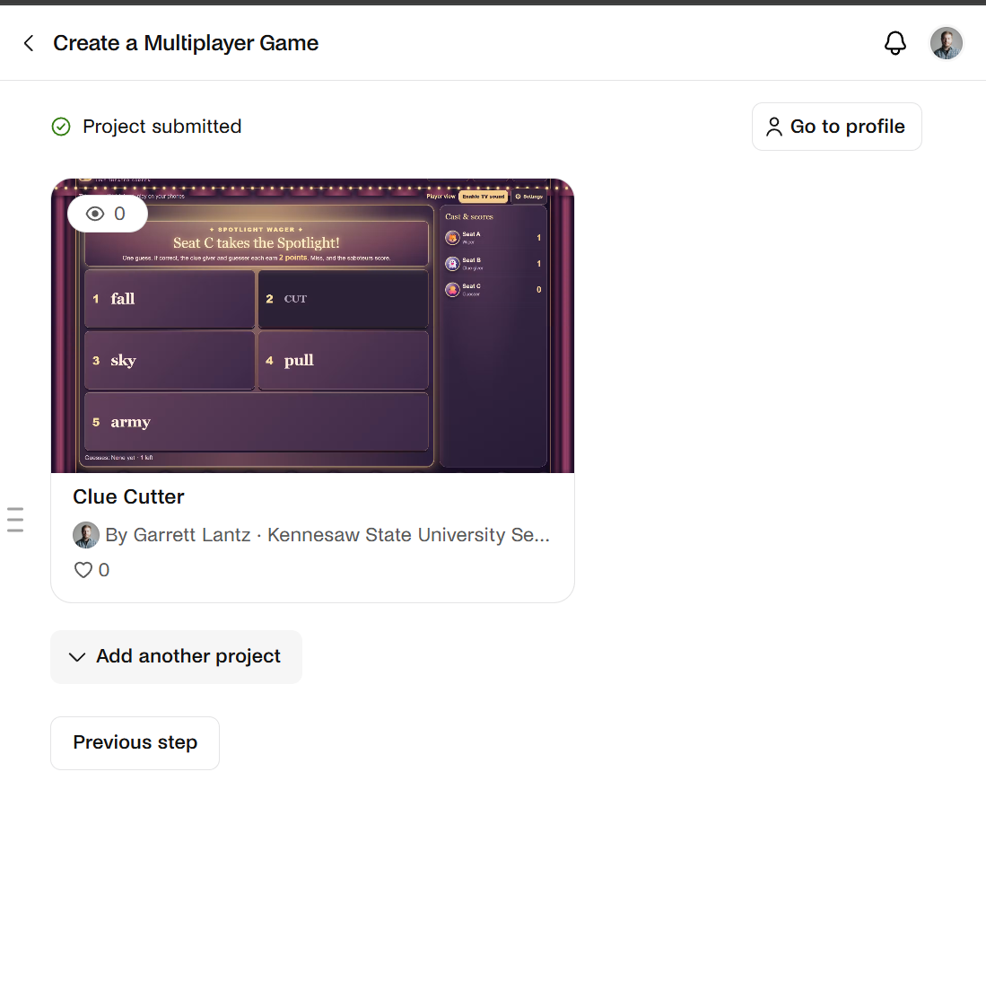
By the challenge submission, Clue Cutter had become a playable multiplayer game with its core mechanics and theater presentation in place.
I treated the submission as a milestone rather than the end of development and continued improving the project.
Stage 04 · October 1, 2026
Pip Animation Fixes
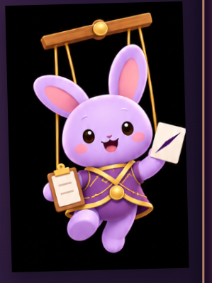
Adding Pip introduced visual problems including clipping, framing, outlines, and sizing. These issues became another round of testing and revision instead of being left in the finished game.
Stage 05 · October 2, 2026
Layout & Pip Placement
Later revisions focused on presentation details such as spacing, alignment, mascot placement, instructions, and unused screen space.
Interface Refinement
Giving Pip a Role on Stage
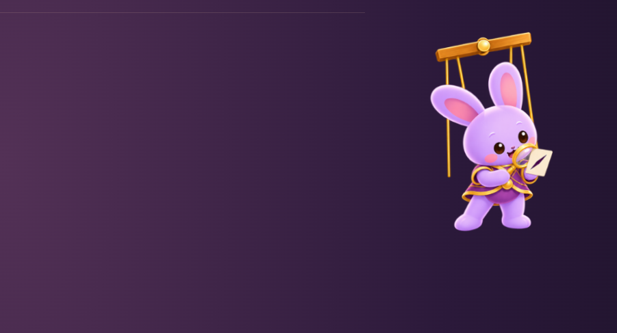
Pip eventually became more than a static mascot. I tested different positions and activities so the character could react to the current phase of the game without covering important information.
Stage 06 · October 2, 2026
Portfolio Presentation
The final stage focused on presenting the strongest parts of the project clearly. I selected screenshots that demonstrate the major mechanics and organized the development history so the progression from prototype to polished presentation is visible.
Project Steps
How I Built Clue Cutter
- Defined the game rules. Planned rotating roles, clue creation, clue removal, guessing, scoring, and multiple rounds.
- Built the early multiplayer structure. Developed room-based play, player seats, and reconnecting after a disconnection.
- Expanded player interaction. Added typed and handwritten clues, reactions, voting, chat, and special gameplay events.
- Created the puppet-theater identity. Developed the stage presentation, audience, interface, and Pip mascot.
- Designed for different devices. Refined the experience for phones, desktop browsers, and the shared TV view.
- Tested and documented problems. Saved screenshots while identifying clipping, spacing, alignment, sizing, and usability issues.
- Iterated with AI assistance. Used AI tools to assist with implementation while I directed requirements, design decisions, testing, and revisions.
- Prepared the final presentation. Selected polished screenshots and documented how the project changed throughout development.
What I Learned
Building Through Iteration
Clue Cutter gave me experience thinking about shared game state, reconnect behavior, responsive interfaces, touch input, multiplayer interaction, visual feedback, and designing different experiences for players and spectators.
It also reinforced that getting a feature working is only part of development. I repeatedly tested the result, identified problems, communicated specific revisions, and evaluated the next version.
Next Steps
Group Playtesting
My next step is to playtest Clue Cutter with a larger group and use that feedback to continue refining the pacing, instructions, interface, and multiplayer experience.